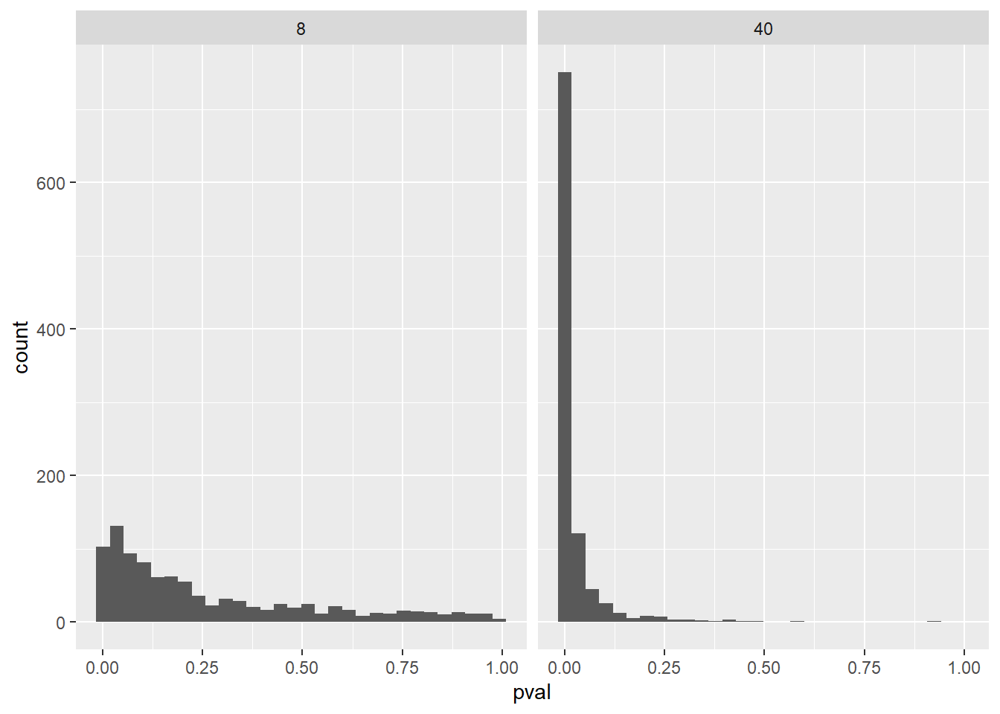

3Slutninger fra statistiske modeller og statistisk styrke
Author
Kandidatnymmer: 503
3.1 Introduksjon
I denne oppgaven skal se på statistisk forskning. Vi skal simulere to forskningsprosjekt med forskjellig størrelse på utvalg. Den første gruppen (m1) har et utvalg på 8 målinger, og den andre gruppen har et utvalg på 40 målinger. Vi skal se hva forskjellig størrelse på utvalg gjør med resultatene.
3.2 Simulasjon
Code
library(tidyverse)set.seed(1)population <-rnorm(1000000, mean =1.5, sd =3)samp1 <-data.frame(y =sample(population, 8, replace =FALSE))samp2 <-data.frame(y =sample(population, 40, replace =FALSE))m1 <-lm(y ~1, data = samp1)m2 <-lm(y ~1, data = samp2)summary(m1)
Call:
lm(formula = y ~ 1, data = samp1)
Residuals:
Min 1Q Median 3Q Max
-6.5322 -1.2523 -0.0883 1.3540 4.8692
Coefficients:
Estimate Std. Error t value Pr(>|t|)
(Intercept) 1.840 1.251 1.47 0.185
Residual standard error: 3.539 on 7 degrees of freedom
Code
summary(m2)
Call:
lm(formula = y ~ 1, data = samp2)
Residuals:
Min 1Q Median 3Q Max
-5.6557 -2.2883 0.2636 2.2549 6.4212
Coefficients:
Estimate Std. Error t value Pr(>|t|)
(Intercept) 1.5642 0.4774 3.276 0.00221 **
---
Signif. codes: 0 '***' 0.001 '**' 0.01 '*' 0.05 '.' 0.1 ' ' 1
Residual standard error: 3.019 on 39 degrees of freedom
3.2.1 Oppgave 1.
Explain the estimate, SE, t-value, and p-value from the regression models that we created previously (m1 and m2).
Over kan vi se resultatene av simuleringen. og vi får følgende resultater:
m1
m2
Estimat
1.84
1.5642
Standard feil
1.251
0.4774
t-verdi
1.47
3.276
p-verdi
0.185
0.00221
3.2.2 Oppgave 2.
Discuss what contributes to the different results in the two studies (m1 and m2).
Når vi øker størelsen på utvalget ser vi at dette påvirker resultatene. I en faktisk forskning vil vi jo ikke vite det faktiske gjennomsnittet i en populasjon. I denne simuleringen derimot har vi bestemt at gjennomsnittet (mean) er 1.5. Når vi har et utvalg på 8 observasjoner får vi resultatet 1.84, og med 40 observasjoner får vi 1.56 som estimat. Ved å øke antall faktiske observasjoner kan vi altså gjøre et mer presist estimat av hva som er gjennomsnittet i en populasjon.
På samme måte vil størelsen på utvalget påvirke standard feilen i forsøket. Standard feil beregnes ved å dele standard avvik, som i denne simuleringen er 3 på kvadratroten av antall observasjoner. I denne simuleringen blir det altså tre delt på kvadratroten av 8 i m1, og kvadratroten av 40 i m2. Som vi kan se får vi da lavere standers feil i m2 hvor utvalget er større. Standard feil handler nemlig om hvor sannsynlig det er at utvalger er representativt for populasjonene. Lav standard feil betyr at det er stor sansynlighet for at utvalget er representativt.
T-verdien beregnes ved å dele estimatet med standard feil og forteller oss om forskjellen i gruppene er signifikant (Spiegelhalter, 2019). Videre sier Spieghalter at en t-verdi over 2 tilsvarer en p-verdi, som er et mål på forskjellen mellom innsamlet data og null-hypotesen, under 0,05 som igjen vil bety at statisitkken er signifikant. I vår simulering kan vi se at dette blir avgjørende. I simuleringen med 8 i utvalger får vi en t-verdi på 1.47 som tilsvarer en p-verdi på 0.185 altså ikke signifikant. I utvalget med 40 derimot er t-verdien 3,276 og p-verdien 0.00221 som vil si at resultatet er signifikant. I forsøket med 8 observasjoner ville det altså ha blitt gjort en type II feil, altså a avvise en korrekt alternativ hypotese fordi testresultatet støtter null-hypotesen (Spiegelhalter, 2019).
3.2.3 Oppgave 3.
Why do we use the shaded area in the lower and upper tail of the t-distribution (See Figure).
Grafen viser en tosidig p-verdi for m1. Midt i grafen ser vi det estimerte gjennomsnittet. En tosidig p-verdi sier noe om hvor mange observasjoner vi kan regne med å få fra populasjonen som er like ekstreme eller mer ekstreme enn den observerte t-verdien (Spiegelhalter, 2019). De blå feltene viser altså hvor mange observasjoner vi kan ha utenfor null-hypotesen uten at null-hypotesen blir motbevist.
3.3 Many studies
Code
library(tidyverse)set.seed(1)population <-rnorm(1000000, mean =1.5, sd =3)# Create data frames to store the model estimatesresults_8 <-data.frame(estimate =rep(NA, 1000), se =rep(NA, 1000), pval =rep(NA, 1000), n =8) results_40 <-data.frame(estimate =rep(NA, 1000), se =rep(NA, 1000), pval =rep(NA, 1000), n =40)# A for loop used to sample 1000 studies, each iteration (i) will draw a new sample# from the population. for(i in1:1000) {# Draw a sample samp1 <-data.frame(y =sample(population, 8, replace =FALSE)) samp2 <-data.frame(y =sample(population, 40, replace =FALSE))# Model the data m1 <-lm(y ~1, data = samp1) m2 <-lm(y ~1, data = samp2)# Extract values from the models results_8[i, 1] <-coef(summary(m1))[1, 1] results_8[i, 2] <-coef(summary(m1))[1, 2] results_8[i, 3] <-coef(summary(m1))[1, 4] results_40[i, 1] <-coef(summary(m2))[1, 1] results_40[i, 2] <-coef(summary(m2))[1, 2] results_40[i, 3] <-coef(summary(m2))[1, 4]}# Save the results in a combined data frameresults <-bind_rows(results_8, results_40)
3.3.1 Oppgave 4.
Calculate the standard deviation of the estimate variable, and the average of the se variable for each of the study sample sizes (8 and 40). Explain why these numbers are very similar. How can you define the Standard Error (SE) in light of these calculations?
m1: 8
Code
library(dplyr)# Beregn standardavviket til estimate og gjennomsnittet av se for hver utvalgsstørrelseresults_summary <- results %>%group_by(n) %>%summarise(mean =mean(estimate),std_estimate =sd(estimate), # Standardavviket til estimateavg_se =mean(se) # Gjennomsnittet av standardfeilen )# Vis sammendraget av resultateneprint(results_summary)
# A tibble: 2 × 4
n mean std_estimate avg_se
<dbl> <dbl> <dbl> <dbl>
1 8 1.52 1.07 1.02
2 40 1.51 0.484 0.470
Som vi kan se over er standard avvik og gjennomsnitlig standard feil svært like. Forskjellen er 0,05 i m1 og 0,014 i m2. Grunnen til at standard avvik og standard feil er så like er på grunn av de henger sammen. Standard feil finner vi som tidligere nevn ved å dele standard avvik på kvadratroten av utvalget. Begge disse verdiene blir brukt for å lage kurvemodeller som viser p-verdi og t-verdi. Når vi får lavere standard avvik og standard feil vil kurven bli smalere og spissere, fordi estimatet kommer nærmere det faktiske gjennomsnittet. hvis vi skulle laget en kurve ut fra utvalgene m1 og m2, ville altså m1 være bredere og rundere enn m2 som ville være smal og spiss.
beregne kurven
3.3.2 Oppgave 5.
Create a histogram (see example code below) of the p-values from each study sample-size. How do you interpret these histograms, what do they tell you about the effect of sample size on statistical power?
Code
# Example code for copy and paste# A two facets histogram can be created with ggplot2results %>%ggplot(aes(pval)) +geom_histogram() +facet_wrap(~ n)

I denne oppgaven kan vi se hva jeg snakket om i forrige oppgave. Et større utvalg vil gjøre at histogrammet blir smalere og spissere. Vi samler estimatene mot gjennomsnittet. Som vi kan se fra histogrammene vil et større utvalg gi lavere p-verdi, som i dette tilfelle vil gjøre resultatet signifikant som jeg har vist tidligere i oppgaven. Statistisk styrke er sansynligheten for å korrekt forkaste nullhypotesen gitt at den nye hypotesen stemmer, har en klar sammenheng med utvalgstørrelsen (Spiegelhalter, 2019). Med større utvalg vil altså styrken øke, som vi også kan se i utregningen over.
3.3.3 Oppgave 6.
Calculate the number of studies from each sample size that declare a statistical significant effect (specify a threshold for, your significance level).
Code
# Count the proportion of tests below a certain p-value for each results %>%filter(pval <0.05) %>%group_by(n) %>%summarise(sig_results =n()/1000)
# A tibble: 2 × 2
n sig_results
<dbl> <dbl>
1 8 0.227
2 40 0.865
I denne beregningen skal jeg finne ut hvor mange studier med utvalgsstørelser 8 (lik m1) og 40 (lik m2) som vil få statistisk signifikante resultat med en p-verdi < 0,05. Her får jeg resultatene 0,227 for m1, og 0,865 for m2. Dette kan vi gjøre om til prosentverier: m1: 22,7 % og m2: 86,5 %. Det er altså stor forskjell på den betydelige effekten på de forskjellige studiene. I studier med 8 deltakere vil det bare vaære 22,7 % sjanse for a få et statistisk sikgnifikant resultat, mens det i studier med 40 vil være 86,5 % sjanse for å få et statistisk signifikant resultat.
3.3.4 Oppgave 7.
Using the pwr package, calculate the power of a one-sample t-test, with a effect size of 1.5/3, your specified significance level and sample sizes 8 and 40. Explain the results in the light of your simulations.
Code
# Using the pwr packagelibrary(pwr)pwr.t.test(n =8, sig.level =0.05, d =1.5/3, type ="one.sample")
One-sample t test power calculation
n = 8
d = 0.5
sig.level = 0.05
power = 0.232077
alternative = two.sided
Code
pwr.t.test(n =40, sig.level =0.05, d =1.5/3, type ="one.sample")
One-sample t test power calculation
n = 40
d = 0.5
sig.level = 0.05
power = 0.8693981
alternative = two.sided
Statistisk styrke er sannsynligheten for å korrekt avvise null-hypotesen, gitt at den alternative hypotesen er sann (Spiegelhalter, 2019). Lav statistisk styrke øker sannsynligheten for å begå type I feil som vil si at man feilaktiv avviser en korrekt null-hypotese (Spiegelhalter, 2019). Her får m1 en statistisk styrke på 0,232. Dette stemmer bra med simuleringen i oppgave 6. I m2 derimot får vi en statistisk styrke på 0,869 som er en ganske høy statistisk styrke. I studien m2 er det altså lav sannsynlighet for å begå en type I feil. Dette støtter igjen det jeg har kommet fram til i tidligere oppgaver om at større utvalg øker sannsynligheten for et korrekt resultat, og at hvis vi skulle stole på resultatene fra m1 ville vi begå en type II feil.
3.4 Many studies without population effect
3.4.1 Oppgave 8.
With a significance level of 5%, how many studies would give you a “false positive” result if you did many repeated studies?
Code
population <-rnorm(1000000, mean =0, sd =3)# Create data frames to store the model estimatesresults_8 <-data.frame(estimate =rep(NA, 1000), se =rep(NA, 1000), pval =rep(NA, 1000), n =8) results_40 <-data.frame(estimate =rep(NA, 1000), se =rep(NA, 1000), pval =rep(NA, 1000), n =40)# A for loop used to sample 1000 studies, each iteration (i) will draw a new sample# from the population. for(i in1:1000) {# Draw a sample samp1 <-data.frame(y =sample(population, 8, replace =FALSE)) samp2 <-data.frame(y =sample(population, 40, replace =FALSE))# Model the data m1 <-lm(y ~1, data = samp1) m2 <-lm(y ~1, data = samp2)# Extract values from the models results_8[i, 1] <-coef(summary(m1))[1, 1] results_8[i, 2] <-coef(summary(m1))[1, 2] results_8[i, 3] <-coef(summary(m1))[1, 4] results_40[i, 1] <-coef(summary(m2))[1, 1] results_40[i, 2] <-coef(summary(m2))[1, 2] results_40[i, 3] <-coef(summary(m2))[1, 4]}# Save the results in a combined data frameresults_null <-bind_rows(results_8, results_40)
Code
# Calculate number of false positivesfalse_positives <- results_null %>%filter(pval <0.05) %>%group_by(n) %>%summarise(sig_results =n() /1000)# Print resultsprint(false_positives)
# A tibble: 2 × 2
n sig_results
<dbl> <dbl>
1 8 0.053
2 40 0.053
Fra resultatene o simuleringen over kan vi se at vi får det samme resultatet for begge utvalgstørrelsene, nemlig 0,053. Dette vil si at ved å gjennomføre forsøkene gjenntatte ganger i den samme populasjonen vil 5,3 % av forsøkene gi falsk positivt resultat. Dette virker ved første øyenkast rart fordi et større utvalg skal i utgangspunkte redusere sjansen for å få falsk positivt svar fordi man tester en større andel av populajsonen. Men hvis vi gjennomfører det samme forsøket gjenntatte ganger innenfor samme populajson vil vi ende opp med samme resultet gitt at hypotesen stemmer, fordi det også på denne måten vil teste en større andel av populasjonen.
Likevel vil få få falsk positivt resultat så mye som 5,3 % av tilfellene. Dette kan forklares med at utvalgene er tilfeldig, og i noen utvalg vil vi da ha grupper som ikke stemmer med gjennomsnittet av populasjonen. Dette vil alltid skje med mindre vi faktisk tester hele populasjonen. Dette er grunnen til at vi ikke bare kan lene oss på testresultatene, men at vi også må støtte opp med statistisk analyse.
Spiegelhalter D (2019). The art of statistics: How to learn from data. New York: Basic books, Hatchet book group.